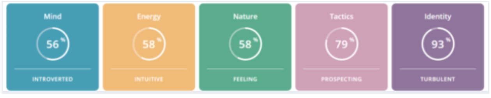

Kerry's Profile
RMIT ID: s3839262
RMIT EMAIL: s3839262@student.rmit.edu.au

About Me
Hello, my name is Kerry Tsz Man Lam. I was born in Hong Kong on the 16th of October, 2001, and moved to Melbourne, Australia during the following August. Aside from a couple of holidays spent back in HK, I have never left Melbourne. You’ll find that it’s pretty easy to miss my Asian heritage as long as you don’t look at my face. Of course, I have retained a little of my mother tongue, Cantonese, but it’s definitely nothing to brag about. I also have minimal knowledge of Mandarin, the inferior (kidding!), yet far more prevalent cousin of Cantonese, by virtue of my completion of Chinese in VCE.
Last year, I completed Year 12, to no pride from my family, as I had only brought home a measly 74 ATAR, instead of the spicy, spicy 90+ that they had hoped for. If I could’ve changed my Specialist Maths to Art Studio, I would’ve gone for it. Either way, I passed, and managed to yoink a spot in RMIT doing the Games Design course, where I spent my first ever semester of uni oddly dissatisfied, despite my rather artistic and creative disposition. As a result, I moved to plan B, switched courses, and here I am, doing my first semester of Information Technology.
Personality Tests
My strength lies in being an accelerator for my team. While I may easily lose sight of the big picture and come up with impractical solutions or lack confidence and assertiveness when trying to provide a direction, I will pick up the pace quickly once the team gathers their bearings around the problem that we need to solve. This means that in a group dynamic, I am at my weakest as a leader or director, though that does not mean I am most effective as a minor pawn; I excel in a position where I have established authority and gained the respect of my group’s members, as that is where I can bring energy and raise morale while foregoing the scenarios that expose my lack of assertiveness and impracticality.
Additionally, my flexibility and creativity can become the glue of my group as I will have a natural tendency to find a suitable compromise for everyone in the case of a conflict. Overall, contrary to my leanings to introversion, I work more effectively as an individual in a group than alone.
Ideal Job
As a data scientist, you’re looking at numbers that have an actual place in the real world, analysing figures that have a tangible presence, affect each other, and affect numbers you didn’t even know you were supposed to look at in the first place. High schoolers always complain about the lack of real world application in maths. Myself included. Skills involved in the profession include:
Fluency in programming in a variety of languages
Proficiency with databases
Strong mathematical skills
Ability to translate data to information for a less adept audience
Familiarity with cloud computing
Machine Learning